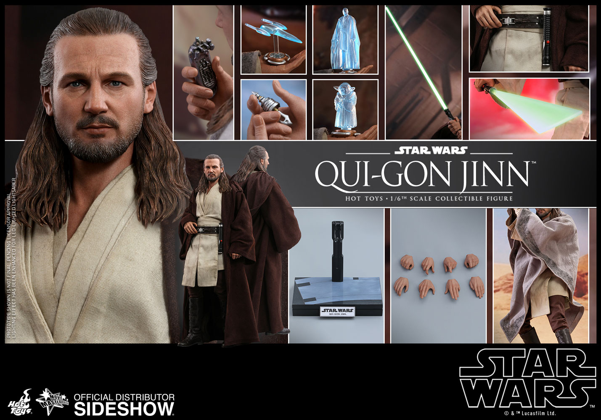
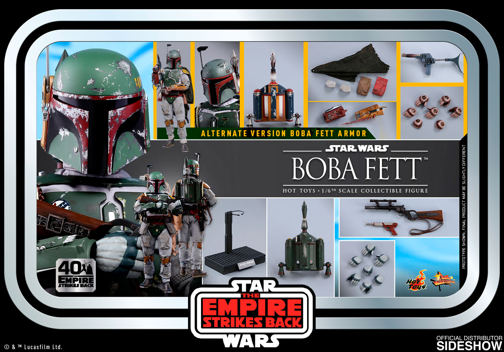

A hobby of mine is collecting high-end 1/6 scale figures. More specifically, figures from the Star Wars franchise. These figures are made by Hot Toys.
"Hot Toys is a Hong Kong-based production house for designing, developing, and manufacturing highly detailed collectible merchandise to worldwide markets. Established in 2000, the company initially focused on producing 1:6 scale U.S. military special forces action figures before transitioning to production of high-end figures based on media properties, primarily under their Movie Masterpiece Series brand."
I purchase these figures online from Sideshow Collectibles, the exclusive distributor of Hot Toys collectible figures in the United States.
I first started collecting these figures about a year and a half ago. They are priced fairly high, but the quality of the figure is more than worth the price point. Plus each and every figure you buy will almost always be worth more on the secondary market once the figure sells out. And the figure will ALWAYS sell out because only a limited amount of each figure, or each version of said figure, are made. Once they sell out, they will never be re-stocked which results in the figures selling on eBay for double, if not triple the price you originally paid. So the figures are very high value as well.
Darth Vader
Qui-Gon Jin
Boba Fett